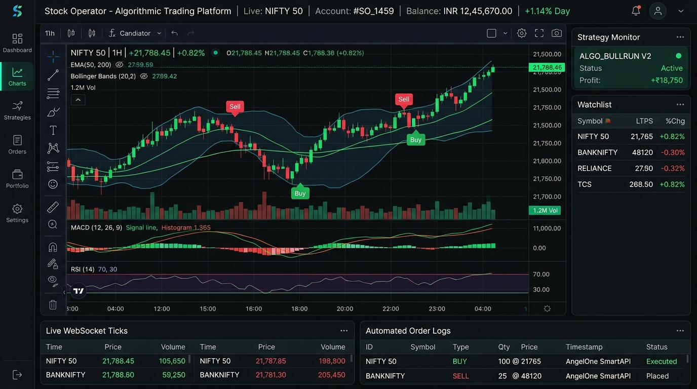

↗FULL STACK · ALGORITHMIC TRADING
Stock Operator
Built a production-grade algorithmic trading bot integrating AngelOne SmartAPI 2.0 for automated order execution and live market access. Implemented real-time WebSocket tick feeds, custom technical indicators, and candlestick pattern detection logic to drive trading decisions. Built a TradingView-embedded NIFTY dashboard for live market visualization.
MERN StackAngelOne SmartAPI 2.0WebSocketMongoDBGCPPM2
Source code ↗May 2026 – Sep 2026